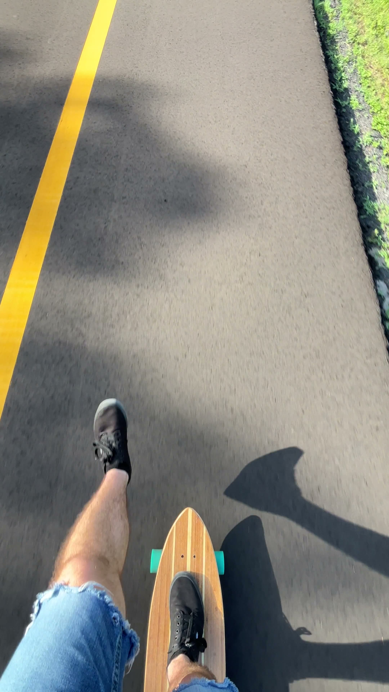
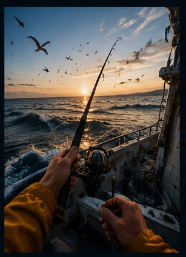
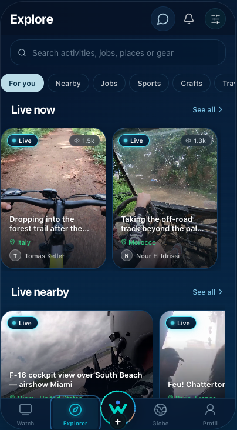
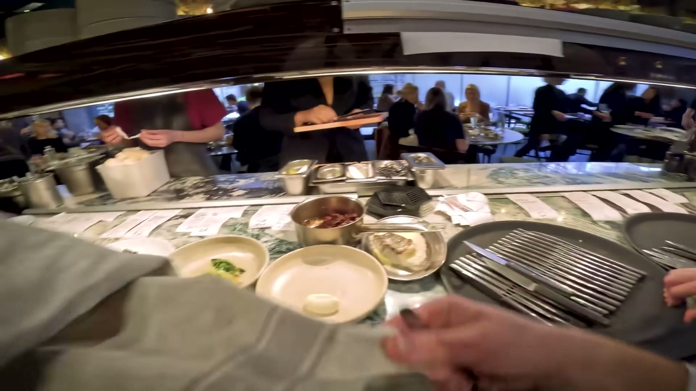
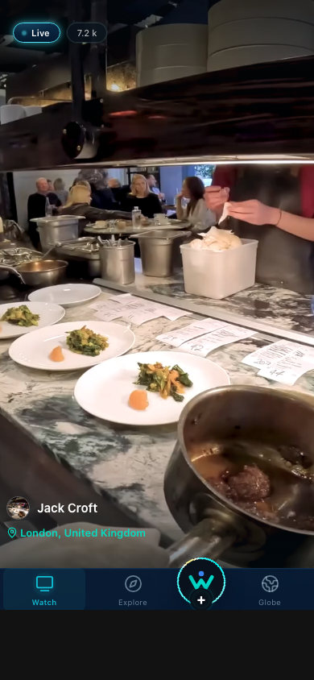
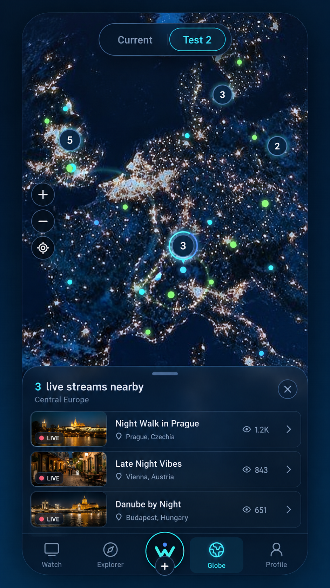
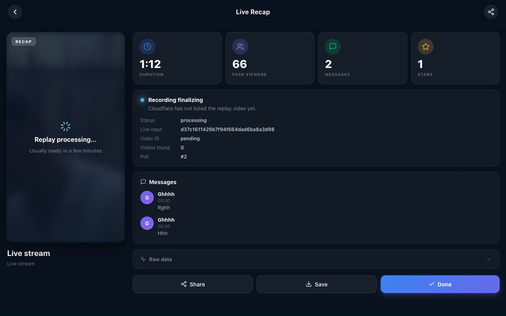

Un créateur, une pratique, une présence.

Voir le monde en Live, à hauteur humaine.
Référence produit — Vision & Positionnement
Vuvio permet de découvrir le monde en direct à travers le point de vue de personnes réelles: leurs activités, leurs métiers, leurs passions, leurs lieux et leurs expériences.
LIVE · EXPLORE · PARTAGE · DÉCOUVRE
Résumé simple & vision
Une scène réelle, vue depuis le regard de quelqu’un.
Ouvrir Vuvio, c’est entrer dans un moment qui se déroule maintenant: un cycliste dans les Alpes, un pêcheur en mer, un guide dans une ville, un artisan dans son atelier, un cuisinier en service, un skieur sur une piste, un musicien en répétition ou un voyageur dans une rue inconnue.
Proche, lointain, urbain, naturel ou professionnel.
Un métier, une passion, un moment ordinaire ou rare.
La valeur de voir pendant que cela arrive.
Une expérience vécue à hauteur humaine.




« Voir le monde en Live, à hauteur humaine. »
Utilisateurs
Trois profils, une même envie: vivre et partager le monde autrement.


Le spectateur
Il vient découvrir, explorer, apprendre par observation et ressentir une présence en Live. Il peut suivre un guide, regarder une randonnée, observer une sortie de pêche, découvrir une course locale, une préparation culinaire ou revoir une expérience terminée.
Curiosité · immersion · apprentissage · vrai moment
Le créateur
Sportif, guide, artisan, musicien, cuisinier, voyageur, photographe, pêcheur, agriculteur, mécanicien ou pilote de drone: il montre son activité sans produire une vidéo compliquée, construit une communauté, garde des replays et rend visible son équipement.
Visibilité · communauté · mémoire · relation directe
Marques & partenaires
Les produits apparaissent dans leur contexte réel: caméra, vélo, veste, micro, planche, outil ou chaussures. Le potentiel dépend de la qualité des contenus, de la confiance, de la transparence commerciale et de la pertinence entre marque, créateur et activité.
Usage réel · confiance · sponsoring clair · équipement utileExpérience produit
Six surfaces pour regarder, chercher, retrouver et comprendre.

Watch
Entrée immédiate dans une expérience réelle. Le Live reste au centre; créateur, activité, lieu, profil, équipement et actions sociales aident sans voler l’attention.

Globe
Rotation, zoom, points géographiques et groupes de Lives proches. Il doit rester lisible, utile et ouvrir vite un Live.
Explore
Recherche par activité, catégorie, créateur, ville, pays, environnement, Live proche, prochain Live ou replay.
Profil
Mémoire du créateur: activités, expériences passées, prochains Lives, équipement, style et relation durable.

Replay & Recap
Un Live peut devenir une expérience retrouvable, partageable, conservée et intégrée à un parcours.
Équipement
Répondre à la question « qu’utilise cette personne ? » sans interrompre l’expérience. Équipement d’abord, commerce ensuite.